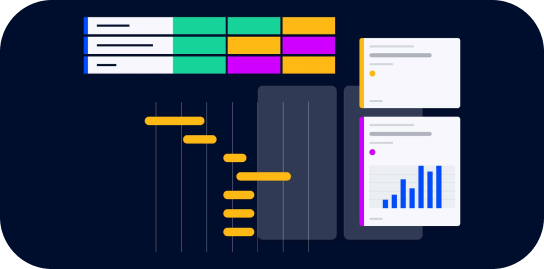
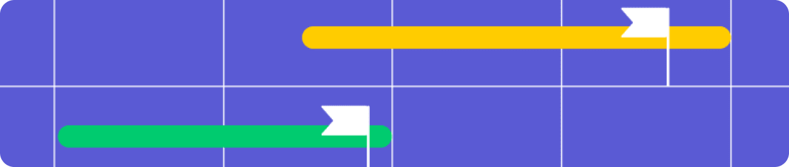

FocusBox helps students stay organized and focused on what matters most,
with simple tools to track tasks, set priorities, and meet deadlines.
Stay on top of your goals and achieve more, one task at a time.
Maximize Productivity
FocusBox provides the tools you need to stay organized, manage your time
effectively, and keep you focused on reaching your goals, making task
management simple and stress-free.

How it Works?
FocusBox simplifies task management with an easy-to-use setup. Create
tasks, set priorities, and stay on track with reminders, all in one
place.
Sign Up & Set Up
Create your account and personalize your dashboard to get started with
task management.
Add Tasks
Never miss a deadline by setting reminders and prioritizing tasks to
stay on top of your goals.
Set Reminders
Never miss a deadline by setting reminders and prioritizing tasks to
stay on top of your goals.
How FocusBox helps you?
FocusBox provides the tools you need to stay organized, manage your time
effectively, and keep you focused on reaching your goals, making task
management simple and stress-free.

1
Enhanced Focus
Stay focused on what truly matters by organizing tasks and setting clear
priorities.
2
Improved Time Management
Stay focused on what truly matters by organizing tasks and setting clear
priorities.
3
Increased Productivity
Break down tasks into manageable steps, helping you achieve more with
less stress.
4
Goal Achievement
Stay motivated and on track to meet your academic and personal goals
through structured task management.
Here are some Frequently Asked Questions
Explore our comprehensive FAQ section, designed to answer all your
pressing questions about FocusBox. From Technical support to feature
explainations.
What is a FocusBox?
ANS
How can FocusBox help me?
ANS
Is FocusBox a paid software?
ANS
Can I categorize my tasks in Focus Box?
ANS
How can FocusBox help me get good grades in exams?
ANS
Can I add my friend in my Task Box?
ANS
Why is FocusBox is better than other task managers?
ANS
How to get started with FocusBox?
ANS
<>
FocusBox
Developed to help students stay organized, simplifying task management,
enabling better focus, time management, and goal achievement.